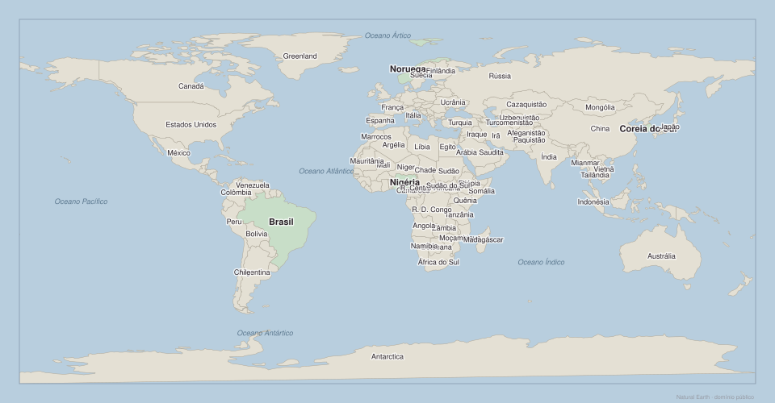
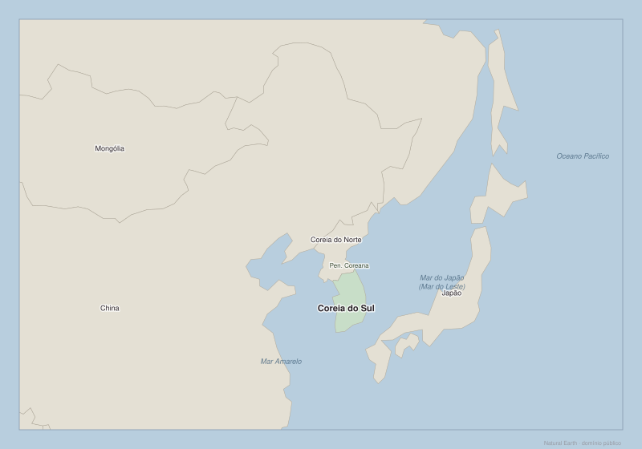

Atlas do Mundo
Mapas para localizar, comparar e fazer perguntas melhores
Para que serve este Atlas
Este Atlas não existe para separar o mundo entre países "bons" e "ruins". Ele serve para localizar lugares, perceber distâncias, observar mares, fronteiras e rotas, e fazer perguntas mais precisas.
Um mapa pode mostrar que um país tem litoral, muitos vizinhos ou um território grande. Ele não mostra sozinho se há boas escolas, regras previsíveis, desigualdade, conflitos ou oportunidades para a maioria das pessoas. Por isso, o mapa é o início de uma investigação, não a resposta final.
Localizar não é explicar. A geografia cria facilidades e obstáculos, mas história, instituições, educação, infraestrutura e escolhas coletivas também participam da trajetória de um país.
Como usar
Para a Semana 1, usem sempre os mesmos quatro casos: Brasil, Noruega, Coreia do Sul e Nigéria. Eles não foram escolhidos para formar uma classificação. Cada caso ajuda a testar uma explicação simples demais sobre riqueza, recursos, clima ou geografia.
Mapas

Onde ficam Brasil, Noruega, Coreia do Sul e Nigéria em relação aos continentes e aos oceanos?
O que observar
- Brasil fica na América do Sul e tem uma costa extensa voltada para o oceano Atlântico.
- Noruega fica no norte da Europa e possui uma costa longa voltada para o Atlântico Norte e mares próximos.
- Coreia do Sul fica no leste da Ásia, na porção sul da península Coreana, perto de China e Japão.
- Nigéria fica no oeste da África, junto ao Golfo da Guiné, parte do oceano Atlântico.
Encontre os quatro países. Para cada um, diga em voz alta:
- o continente;
- se ele tem acesso ao mar;
- um oceano ou mar próximo.
Escreva duas observações que o mapa permite fazer sobre os quatro países e duas perguntas que ele não responde. Evite usar palavras como "sempre", "nunca" ou "por isso é rico/pobre".
Dois países podem ter acesso ao mar e resultados sociais muito diferentes? Que outras informações seriam necessárias para comparar suas oportunidades?

Consigo localizar sem depender do nome escrito?
Este mapa conserva as fronteiras políticas, os contornos dos continentes e os oceanos, mas remove todos os nomes. Ele não é um teste de memória: é uma maneira de perceber quais referências espaciais ajudam a orientação.
Atividade em dupla
- Um aluno escolhe, sem dizer, um dos quatro países da Semana 1.
- O outro faz no máximo cinco perguntas espaciais: continente, hemisfério, litoral, vizinhos ou oceano.
- Troquem de papel.
Registro curto
Completem a frase:
Para localizar um país em um mapa mudo, eu procuro primeiro ____ e depois ____.
Aceite aproximações geográficas razoáveis. O objetivo inicial é construir referências: continentes, oceanos, norte/sul, leste/oeste, litoral e vizinhança. A precisão de capitais e coordenadas não é o foco desta semana.

Foco: Noruega — Como a posição geográfica cria condições de comércio e contato?
O que deve aparecer
Noruega, Suécia, Finlândia, Dinamarca, Islândia, Reino Unido e a parte europeia da Rússia quando visível; oceano Atlântico Norte, mar da Noruega, mar do Norte; fronteiras e nomes legíveis em português.
O que observar
A Noruega fica na Península Escandinava e tem litoral muito recortado. Ela está próxima de rotas do Atlântico Norte e de outros países europeus. Essas são condições geográficas relevantes, mas não explicam sozinhas seus serviços públicos, sua economia ou suas instituições.
Atividade
No mapa, encontrem uma rota marítima plausível entre a Noruega e o Reino Unido. Depois respondam:
- Que vantagem uma costa longa pode oferecer ao comércio e à pesca?
- Que dificuldade climática ou de distância um país do norte ainda pode enfrentar?
- Qual pergunta sobre a Noruega o mapa não consegue responder?
Uma vantagem geográfica pode ajudar, mas precisa ser transformada em oportunidade por conhecimento, infraestrutura, regras e organização.

Foco: Nigéria — O acesso ao Golfo da Guiné cria quais oportunidades e limites?
O que deve aparecer
Nigéria, Benim, Níger, Chade e Camarões; Golfo da Guiné e oceano Atlântico; fronteiras e nomes legíveis em português.
O que observar
A Nigéria tem acesso ao Golfo da Guiné e está ligada a uma região de intensa circulação de pessoas, produtos e recursos. É um país muito populoso e diverso, portanto uma frase única nunca basta para descrevê-lo.
Atividade
- Localizem a Nigéria e seus quatro vizinhos terrestres.
- Expliquem como o acesso ao Golfo da Guiné pode facilitar contatos comerciais.
- Conversem: por que acesso ao mar e recursos naturais não garantem, por si sós, bem-estar amplo?
Critique esta frase em três ou quatro linhas: "Um país com petróleo tem tudo de que precisa para ser próspero." Use o mapa apenas como ponto de partida, não como prova final.

Foco: Coreia do Sul — Como a posição em uma península perto de grandes economias cria oportunidades e riscos?
O que deve aparecer
Coreia do Sul, Coreia do Norte, China, Japão e Rússia quando visível; península Coreana, mar Amarelo e mar do Japão (também chamado mar do Leste); fronteiras e nomes legíveis em português.
O que observar
A Coreia do Sul fica em uma península, perto de grandes economias e de importantes rotas marítimas do leste asiático. Também vive em uma região marcada por guerras, tensões e transformações rápidas. O mapa mostra proximidade; ele não mostra, sozinho, como educação, indústria e políticas públicas mudaram ao longo do tempo.
Atividade
- Encontrem a Coreia do Sul, a Coreia do Norte, a China e o Japão.
- Identifiquem dois mares próximos.
- Expliquem por que estar perto de grandes mercados pode ser uma oportunidade e também uma fonte de riscos.
Países próximos recebem automaticamente os mesmos resultados? Que decisões, conflitos ou capacidades podem fazer trajetórias próximas seguirem caminhos diferentes?

Foco: Brasil — O que a posição na América do Sul revela sobre oportunidades e desafios?
O que deve aparecer
Brasil e todos os países sul-americanos; oceano Atlântico e oceano Pacífico; fronteiras e nomes legíveis em português; marcador discreto para Salvador (BA).
O que observar
O Brasil ocupa grande parte da América do Sul, possui extensa costa atlântica e faz fronteira com quase todos os países sul-americanos. Essas características criam possibilidades de comércio, cooperação e circulação, mas também desafios de distância, integração interna e infraestrutura.
Partindo de Salvador, imagine o caminho de uma carga até um porto e depois até a Europa. Cite três coisas que poderiam facilitar ou dificultar essa viagem.
Compare duas frases:
- "O Brasil tem muitos recursos, portanto será rico."
- "O Brasil tem muitos recursos e desafios de transformação desses recursos em oportunidades amplas."
Qual frase é mais cuidadosa? Explique o que a segunda acrescenta.
Comparar os quatro casos
Depois de usar os mapas, preencham mentalmente ou na ficha esta tabela. A última coluna é obrigatória: ela impede que o mapa seja usado como explicação única.
| País | Continente | Acesso ao mar | Dois vizinhos ou mares próximos | Uma possibilidade geográfica | Uma pergunta que o mapa não responde |
|---|---|---|---|---|---|
| Brasil | América do Sul | Sim | (preencher) | (preencher) | (preencher) |
| Noruega | Europa | Sim | (preencher) | (preencher) | (preencher) |
| Coreia do Sul | Ásia | Sim | (preencher) | (preencher) | (preencher) |
| Nigéria | África | Sim | (preencher) | (preencher) | (preencher) |
Respostas de referência para o adulto
Estas não são respostas únicas. Elas ajudam apenas a conferir a localização básica.
| País | Exemplos de vizinhos ou mares | Possibilidade geográfica observável | Limite da leitura do mapa |
|---|---|---|---|
| Brasil | Argentina, Bolívia, Peru, Colômbia, Venezuela, oceano Atlântico | Costa extensa e ligação com quase todos os países da América do Sul | Não explica desigualdade, qualidade da escola ou capacidade de executar políticas públicas |
| Noruega | Suécia, Finlândia, Rússia, mar da Noruega, mar do Norte | Litoral voltado ao Atlântico Norte e proximidade de mercados europeus | Não explica como recursos e receitas foram administrados |
| Coreia do Sul | Coreia do Norte, China, Japão, mar Amarelo, mar do Japão (mar do Leste) | Proximidade de rotas e mercados do leste asiático | Não explica industrialização, educação ou conflitos políticos |
| Nigéria | Benim, Níger, Chade, Camarões, Golfo da Guiné | Acesso ao Atlântico por meio do Golfo da Guiné | Não explica distribuição da renda, instituições ou diversidade interna |
O que o mapa responde e o que ele não responde
| O mapa ajuda a responder | O mapa não responde sozinho |
|---|---|
| Onde fica um país? | Por que pessoas daquele país têm determinadas oportunidades? |
| Quais são seus vizinhos, mares e oceanos próximos? | Se a renda é bem distribuída? |
| Se tem litoral, território grande ou muitos vizinhos? | Se escolas, hospitais, leis e estradas funcionam bem? |
| Quais rotas ou distâncias podem importar? | Como a história, os conflitos e as decisões coletivas moldaram a sociedade? |
Escolham uma afirmação absoluta, como "país tropical é pobre" ou "petróleo deixa um país rico". Que informação do Atlas ajuda a testar a frase? Que informação precisa ser buscada fora do mapa?